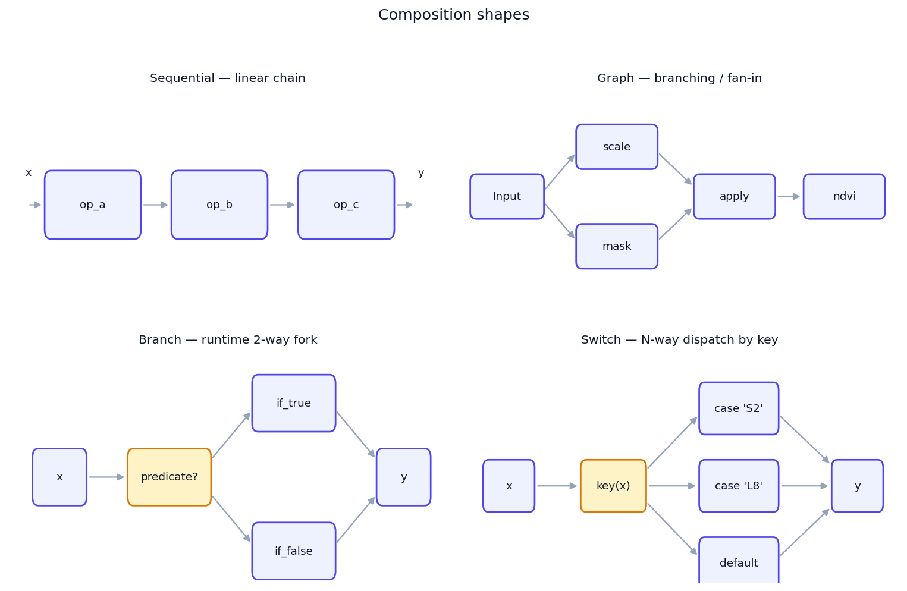
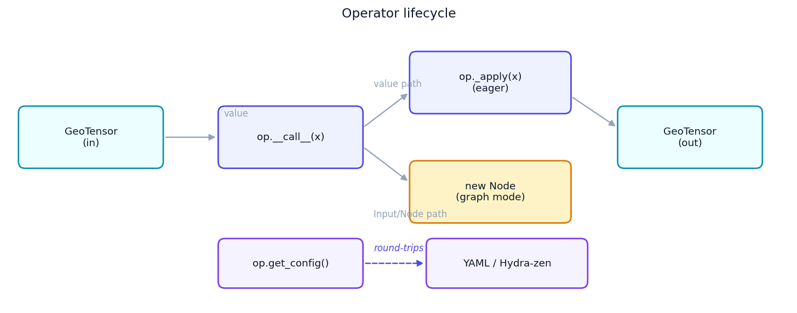
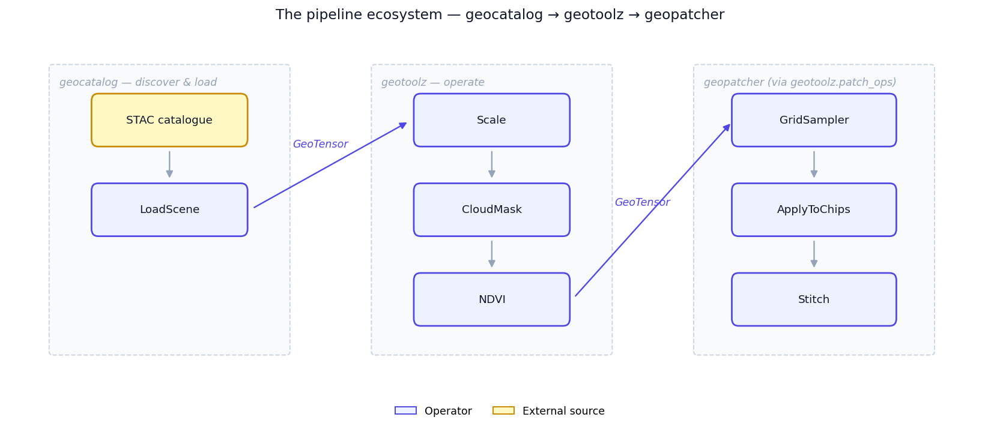

Concepts¶
This page is the why — the composition algebra behind geotoolz,
why each primitive looks the way it does, and when to reach for which
one. For a real-data walk-through, see the Quickstart;
for a hands-on tour against scalars (no GIS setup), see the
composition core notebook in the research_notebook
geostack project.
The model in one diagram¶
flowchart TB
subgraph user["Your pipeline"]
L["Sequential([a, b, c])"]
P["a | b | c"]
G["Graph(inputs=..., outputs=...)"]
end
subgraph base["Operator (base class)"]
D["__call__ — dual-mode dispatch (eager vs graph)"]
A["_apply — subclass implements"]
C["get_config — JSON round-trip"]
O["__or__ — pipe with |"]
end
user --> base
base --> Carrier(["Carrier — Any in core, GeoTensor in domain ops"])The composition core is carrier-agnostic. The same algebra runs on
GeoTensors in production and on scalars or ndarrays in tests. Domain
operators (NDVI, MaskFromSCL, …) narrow to GeoTensor at their own
signatures; the core stays generic.

What an Operator is¶
An Operator is a thing you call. Subclasses implement _apply; the
base class handles two responsibilities for free:
- Dual-mode
__call__— passing a value runs_applyeagerly; passing anInput/Noderecords aNodein aGraph. One method, two behaviours, dispatched on argument type. - Config round-trip —
get_config()returns a JSON-serialisable dict of constructor args. Powers__repr__, pickling sanity, and the optional Hydra-zen integration.
Lifecycle¶
flowchart LR
In["Carrier<br/>(GeoTensor in)"] --> Call["op.__call__(x)"]
Call -->|"value"| Apply["op._apply(x)"]
Call -->|"Input or Node"| Node["new Node in Graph"]
Apply --> Out["Carrier<br/>(GeoTensor out)"]
Config["op.get_config()"] -.->|"round-trips"| YAML[(YAML / Hydra-zen)]
Typed I/O contract¶
Operators don't require Pydantic models, but they pair well with one when you want the input/output contract spelled out — especially when an operator takes multi-input dicts. The pattern:
from pydantic import BaseModel
from pipekit import Operator
class ScaleConfig(BaseModel):
scale: float = 1e-4
clip: tuple[float, float] | None = None
class Scale(Operator):
"""Multiply DN by a scale factor, optionally clipping the output."""
def __init__(self, **cfg) -> None:
self.cfg = ScaleConfig(**cfg)
def _apply(self, gt):
out = gt.values * self.cfg.scale
if self.cfg.clip is not None:
lo, hi = self.cfg.clip
out = out.clip(lo, hi)
return gt.array_as_geotensor(out)
def get_config(self) -> dict:
return self.cfg.model_dump()
ScaleConfig validates the constructor args (one-shot, at __init__
time); get_config() round-trips them losslessly. Inputs and outputs
remain GeoTensors — the typed model lives at the config boundary,
not at the carrier boundary.
Sequential — linear composition¶
flowchart LR
In([x]) --> A[op_a] --> B[op_b] --> C[op_c] --> Out([y])Sequential threads the output of each operator into the next:
Equivalent with the | pipe operator:
| flattens nested Sequentials — a | (b | c) and (a | b) | c
both yield a single three-element Sequential. No nested wrappers, no
surprises.
Reach for Sequential when the pipeline is a single chain: load →
clean → transform → write. Most RS pipelines are this shape.
Graph — symbolic multi-input / multi-output¶
flowchart LR
Img([image]) --> Scale --> Mask[ApplyMask]
Img --> Cloud[CloudMask] --> Mask
Scale --> NDVI
Mask --> NDVI --> Out([ndvi])When your pipeline has branches, fan-out, or multiple inputs,
Sequential isn't enough. Graph builds a DAG by calling operators on
placeholders:
import geotoolz as gz
img = gz.Input("image")
scaled = Scale(scale=1e-4)(img)
mask = CloudMask()(img)
clean = ApplyMask()(scaled, mask)
ndvi = NDVI(nir_idx=7, red_idx=3)(clean)
g = gz.Graph(inputs={"image": img}, outputs={"ndvi": ndvi})
result = g(image=img_gt) # {"ndvi": GeoTensor}
Graph topologically sorts the nodes, evaluates each exactly once, and
returns a dict keyed by output name. Cycle detection and
unreachable-input detection happen at construction time, not at _apply
time.
A Graph is itself an Operator, so it composes — drop one inside a
Sequential, or wrap one in Fanout.
Reach for Graph when you need named intermediates, multiple
inputs, multiple outputs, or fan-in (RMSE between a prediction and a
reference, multi-temporal fusion, …).
Branch — runtime conditional¶
flowchart LR
In([x]) --> Pred{predicate?}
Pred -->|true| T[if_true] --> Out([y])
Pred -->|false| F[if_false] --> Outgz.Branch(
predicate=lambda gt: gt.crs.is_geographic,
if_true=ReprojectToUTM(),
if_false=gz.Identity(),
)
Reach for Branch when the whole pipeline needs a two-way fork
based on a runtime predicate. For per-pixel masking, use ApplyMask /
Where instead — branches dispatch on the carrier, not on each pixel.
Switch — multi-way dispatch¶
flowchart LR
In([x]) --> K[key fn]
K -->|"\"S2\""| S2[s2_pipe]
K -->|"\"L8\""| L8[l8_pipe]
K -->|other| D[default]
S2 --> Out([y])
L8 --> Out
D --> Outgz.Switch(
key=lambda gt: gt.attrs["platform"],
cases={"S2": s2_pipeline, "L8": l8_pipeline},
default=gz.Identity(),
)
Reach for Switch when you have a finite, named set of pipelines
keyed off a scene attribute (sensor, product level, season).
Sequential vs Graph vs Branch/Switch — at a glance¶
| You want… | Reach for | Notes |
|---|---|---|
| 2–6 steps, single chain | Sequential or op_a \| op_b |
Most pipelines. |
| Named intermediates, branches, fan-in | Graph |
Use Input placeholders. |
| Two-way runtime fork on the carrier | Branch |
Predicate operates on the whole carrier. |
| N-way dispatch keyed off an attribute | Switch |
Cases are operators, key is a callable. |
| One-input → many named outputs | Fanout |
Sugar over a single-input Graph. |
| Side-effect that keeps the carrier flowing | Sink |
Composes; unlike a terminal write. |
Lazy vs eager execution¶
geotoolz's composition core is eager by default. Every __call__
on a value runs _apply immediately and returns the next carrier. There
is no deferred graph being built up behind the scenes when you call an
operator on a GeoTensor.
The one exception: passing an Input or Node instead of a value puts
the operator in graph mode, where it records a Node instead of
executing. That's how Graph is built. Once you call the constructed
Graph on real inputs, the whole graph evaluates eagerly.
Lazy execution over chunked arrays (Dask-style) isn't in the algebra —
if you need it, wrap a dask.array inside the carrier and let the
underlying compute layer handle laziness. The Operator boundary stays
eager.
Where geotoolz slots into the ecosystem¶

flowchart LR
subgraph cat["geocatalog"]
STAC[(STAC)] --> Loader[CatalogLoader]
end
subgraph tools["geotoolz"]
Op1[Scale] --> Op2[CloudMask] --> Op3[NDVI]
end
subgraph patch["geopatcher (via geotoolz.patch_ops)"]
GS[GridSampler] --> AC[ApplyToChips] --> St[Stitch]
end
Loader --> Op1
Op3 --> GSgeocatalogsits upstream — it discovers and loads scenes from STAC intoGeoTensors.geotoolzconsumes thoseGeoTensors and runs per-scene transforms.geopatcherhandles sliding-window patching for big rasters.geotoolz.patch_opswraps itsGridSampler,ApplyToChips, andStitchso a tiled-inference flow composes inside aSequentiallike any other operator.
For the end-to-end multi-repo walk-through (catalog → patch → operate),
see the canonical Lake Tahoe notebook:
geocatalog/docs/notebooks/end_to_end_lake_tahoe.ipynb.
The v0.1 idiom library¶
Beyond the bare composition primitives, the core ships a small library
of "operators you reach for constantly" — observers, control flow, and
tiny building blocks. The idea: the Operator interface is general
enough to express things that aren't transforms — side effects,
branching, defaults, escape hatches all become first-class composable
units that round-trip the same as any transform.
Observers (identity-with-side-effect)¶
| Operator | What it does |
|---|---|
Tap |
Calls fn(gt) and passes input through unchanged. |
Snapshot |
Capture-by-name; intermediates available as snap[key] after the pipeline runs. |
ShapeTrace |
Prints shape, dtype, crs at each step. mode="diff_only" skips redundant lines. |
Control flow¶
| Operator | What it does |
|---|---|
Branch |
if predicate(x): if_true(x) else if_false(x). |
Switch |
Multi-way dispatch on key(x). |
Fanout |
One input → dict of outputs. Sugar over a single-input Graph. |
Building blocks¶
| Operator | What it does |
|---|---|
Identity |
Explicit no-op. Use in Branch.if_false, anywhere a slot needs an Operator. |
Const |
Return a fixed value regardless of input. |
Lambda |
Inline-callable escape hatch (won't YAML-round-trip). |
Sink |
Side-effect terminal write that returns the input. Composes. |
Two small disciplines¶
Round-trip discipline (forbid_in_yaml)¶
Operators that hold runtime closures (Tap, Lambda, Branch,
Switch, Sink, ModelOp) carry forbid_in_yaml = True. Their
get_config() is a debug repr, not a faithful YAML round-trip. Use
them freely in code; if you need a fully reproducible YAML artifact,
avoid closures.
Terminal-operator validation (_terminal)¶
Some operators legitimately return None (e.g. a write to disk). Mark
them with _terminal = True; Sequential then rejects them in any
position except the last:
class WriteCOG(Operator):
_terminal = True
def _apply(self, gt):
save_to_disk(gt, self.path)
Sequential([WriteCOG("/a"), Add(1)]) # TypeError
Sequential([Add(1), WriteCOG("/a")]) # ok
Sink is not terminal — it does a side effect and returns the
input. That's why Sink composes mid-chain and WriteCOG doesn't.
Related pages¶
- Quickstart — 15-min real-data walk-through.
- Recipes — short focused how-tos.
- Normalization, Multi-format readers, Sensor readers — module-specific deep-dives.
- Core API reference.
Extended examples¶
The chronological walk-through that exercises every primitive on this
page — Operator / Sequential / Graph / Branch / Switch /
Tap / Snapshot / ShapeTrace / Profile / AssertShape —
against plain scalars first, then real Sentinel-2 over Lake Tahoe,
lives in
research_notebook/projects/geostack:
01_composition_core— every primitive against scalars.02_pipeline_idioms— recipe gallery (Tap / Snapshot / Profile / Histogram / Try / Retry / Cache / Quarantine / Assert*).07_deployment_shapes— 13 deployment patterns (notebook, ETL, FastAPI, tile server, orchestrator, …).